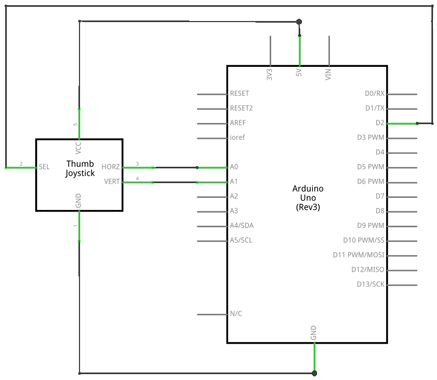
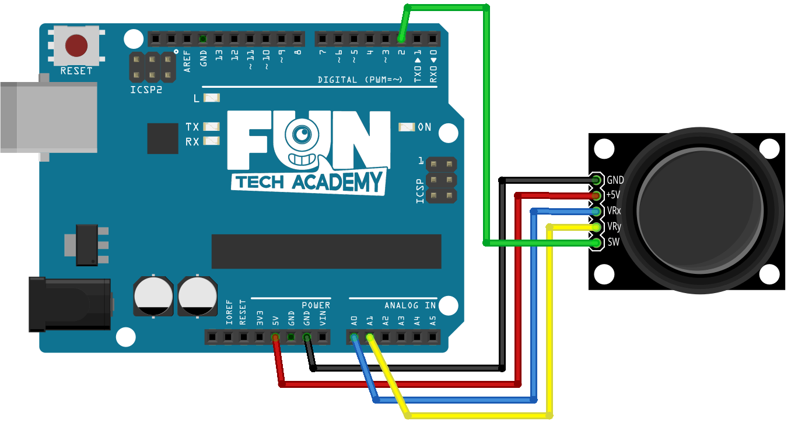

Los joysticks analógicos son una gran manera de añadir un poco de control en tus proyectos y son un elemento
de entrada para programas digitales. También es una herramienta muy útil, que nos ayuda a dar dirección a
nuestro proyecto.
En este tema aprenderemos a usar este módulo.
(1) x Placa Arduino
(1) x Módulo Joystick Analógico
(4) x F M cables (cables de hembra a macho)
El módulo con el que trabajaremos está construido mediante un conjunto de resistencias variables. Con este modulo joystick se puede utilizar el cambio de valor resistivo para tomar lectura con dos entradas analógicas.
El funcionamiento está basado en el movimiento en dos dimensiones de una palanca, este movimiento es capturado por dos potenciómetros (uno para cada movimiento), de este modo se entiende que para cada movimiento en cada dirección será regulado un potenciómetro.
Este módulo de joystick cuenta con cinco pines los cuales se enumeran tomando de referencia de izquierda a
derecha:
- GND: Pin conectado a tierra.
- +5V: pin de alimentación(5v).
- VRx: pin de lectura de potenciómetro para el eje de las x’s.
- VRy: pin de lectura de potenciómetro para el eje de las y’s.
- SW: es un pin adicional que se utiliza para un push button en la parte inferior.
Tenemos que usar pines analógicos para leer los datos de los pines X e Y, y un pin digital para leer el botón.



Una vez efectuado todo el cableado, descargaremos el script del siguiente
Vamos ahora a abrir al monitor, para ver los datos que se van recogiendo, para ello hacemos click en el
botón de Serial Monitor para encender el monitor de serie.
En el monitor de seria, nos irá indicando los valores X e Y del Joystick. Los valores X irán de 0 a 1023 y
los valores Y también van de 0 a 1023. Un valor intermedio de los dos ejes nos querrá decir que está en la
posición central.
Ahora que ya sabemos como funciona el módulo de joystick, vamos a implementar con luces LED el movimiento
del joystick.
El reto consiste en poner 4 LEDS en nuestra protoboard y encenderlos dependiendo de la posición de nuestro
joystick.
Iluminaremos cada uno de los LEDS cuando estemos cerca del valor que lo indique.